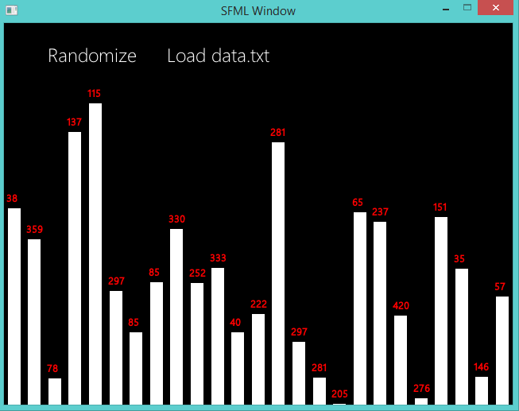
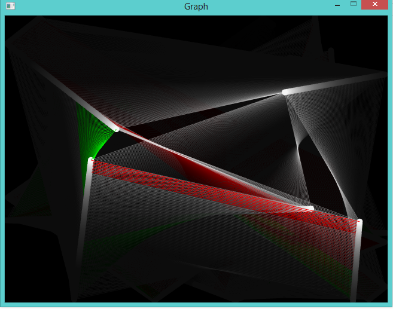
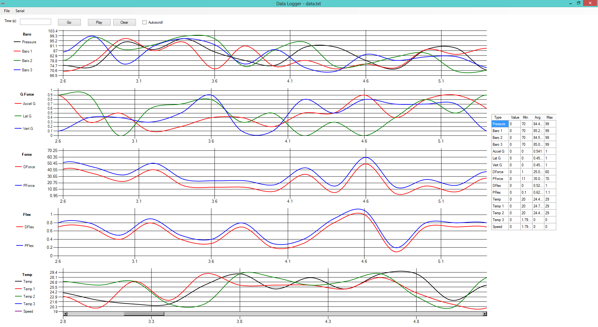

This page contains smaller, miscellaneous, possibly unstable 'experiments' of mine. Most of it is just stuff that I randomly decided to make. These of course won't be finished, or 100% stable. They may crash. Click the images for an enlarged view.
| Bar Graph |
Source exe Video |
|---|---|
|
This is something that originated from a random experiment. I randomly felt like making a pretty GUI with a bar graph. This program is basically just a sexy looking bar graph. It uses Robert Penner's easing equations for the animations. See the linked video to see it in action. I'm not sure what else to say. This was just a random impulse project :)
|
 |
{kind=link}
| Interactive Complete Graph | Download Source Video |
|---|---|
|
This is something I felt like making one night. Two coding sessions later and this came out. You place nodes on the screen, and they connect themselves to every other node on the screen. Nodes will disappear when they collide with each other. The shortest edge is highlighted green, and the longest red. It makes for some cool looking images.
To run this program you can either:
Built with SFML 2.1 and VS2012. |  |
{kind=link}
| Data Logger | Download exe Source |
|---|---|
|
I created this program with a friend who wanted to set up an Arduino with some sensors (g force, temperatures, etc.) and plot the data. This is the result of just playing around with the idea.
|  |
{kind=link}